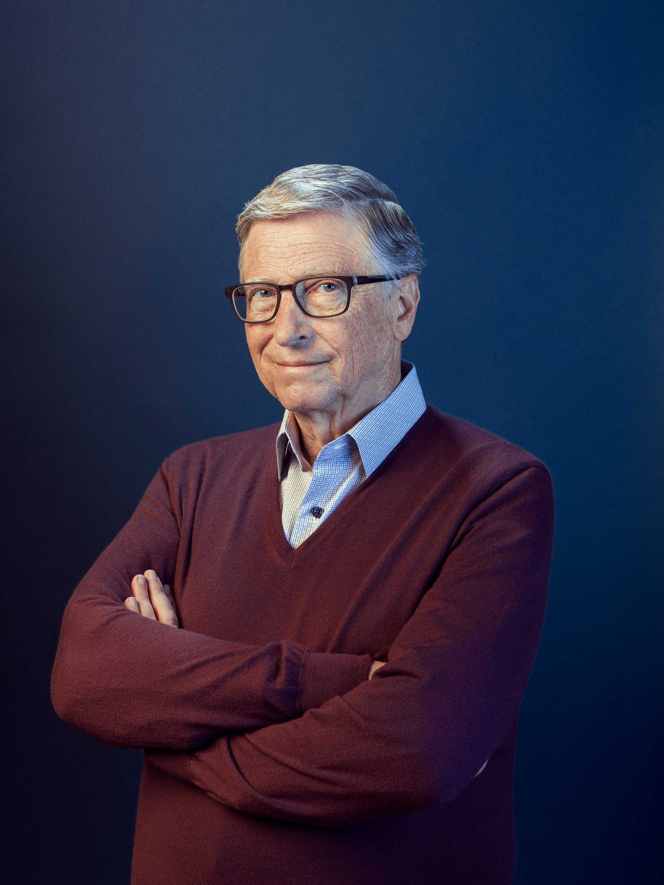

Fundador da Microsoft, Bilionário (Forbes), Filantropo, Escritor.

Bill Gates (1955) é um empresário norte-americano, um dos fundadores da Microsoft, uma gigante desenvolvedora de softwares. Magnata e filantropo é considerado um dos homens mais ricos do mundo. Em 2000, criou a Bill & Melinda Gates Foundation, a maior fundação de caridade do mundo. William Henry Gates nasceu em Seattle, no estado de Washington, nos Estados Unidos, no dia 28 de outubro de 1955. Seu pai, William H. Gates, era advogado e sua mãe, Mary Maxwell Gates, professora. Bill e suas irmãs estudaram nas melhores escolas de sua cidade. Bill Gates começou a trabalhar com programas de jogos eletrônicos, os "fliperamas". Com 17 anos de idade, desenvolveu junto com Paul Allen um software para leitura de fitas magnéticas. Criou, em parceria com o sócio, a empresa Traf-o-Data, mas não demonstrou credibilidade aos clientes por conta da idade dos integrantes.